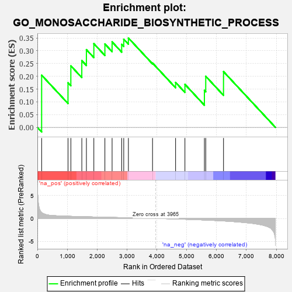
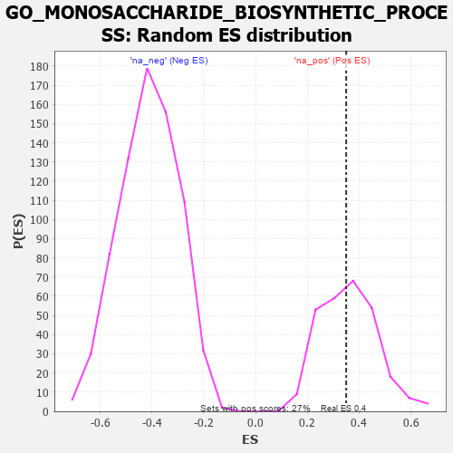

| | | Dataset | 7d |
| Phenotype | NoPhenotypeAvailable |
| Upregulated in class | na_pos |
| GeneSet | GO_MONOSACCHARIDE_BIOSYNTHETIC_PROCESS |
| Enrichment Score (ES) | 0.3501329 |
| Normalized Enrichment Score (NES) | 0.980662 |
| Nominal p-value | 0.52205884 |
| FDR q-value | 0.7621019 |
| FWER p-Value | 1.0 |
Table: GSEA Results Summary

Fig 1: Enrichment plot: GO_MONOSACCHARIDE_BIOSYNTHETIC_PROCESS
Profile of the Running ES Score & Positions of GeneSet Members on the Rank Ordered List
| PROBE | GENE SYMBOL | GENE_TITLE | RANK IN GENE LIST | RANK METRIC SCORE | RUNNING ES | CORE ENRICHMENT | | 1 | TKT | | | 143 | 1.309 | 0.2045 | Yes |
| 2 | G6PC3 | | | 1026 | 0.478 | 0.1748 | Yes |
| 3 | G6PC | | | 1121 | 0.459 | 0.2410 | Yes |
| 4 | GPT | | | 1488 | 0.392 | 0.2616 | Yes |
| 5 | DDB1 | | | 1642 | 0.366 | 0.3045 | Yes |
| 6 | PC | | | 1891 | 0.321 | 0.3280 | Yes |
| 7 | GNMT | | | 2261 | 0.266 | 0.3268 | Yes |
| 8 | KAT2B | | | 2502 | 0.226 | 0.3350 | Yes |
| 9 | PCK2 | | | 2823 | 0.180 | 0.3254 | Yes |
| 10 | WDR5 | | | 2892 | 0.168 | 0.3453 | Yes |
| 11 | MAEA | | | 3048 | 0.143 | 0.3501 | Yes |
| 12 | DGKQ | | | 3856 | 0.020 | 0.2521 | No |
| 13 | CLK2 | | | 4628 | -0.124 | 0.1762 | No |
| 14 | EP300 | | | 4941 | -0.186 | 0.1686 | No |
| 15 | PGM1 | | | 5593 | -0.342 | 0.1449 | No |
| 16 | G6PD | | | 5638 | -0.358 | 0.2001 | No |
| 17 | RGN | | | 6233 | -0.547 | 0.2185 | No |
Table: GSEA details [plain text format]

Fig 2: GO_MONOSACCHARIDE_BIOSYNTHETIC_PROCESS: Random ES distribution
Gene set null distribution of ES for GO_MONOSACCHARIDE_BIOSYNTHETIC_PROCESS